一整个单文件网页：41 个地标、5 个校门、能走进去的机房、会带你走路的向导。 没有引擎、没有素材图、没有依赖 —— 只有一张 canvas 和一万八千行代码。
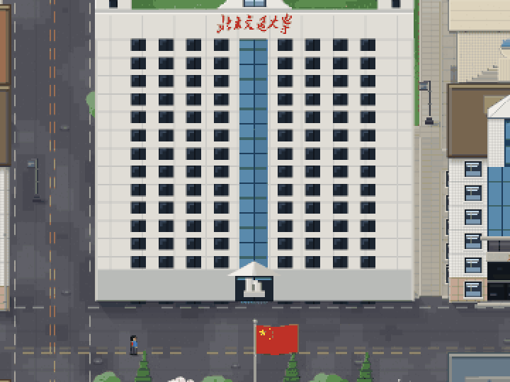
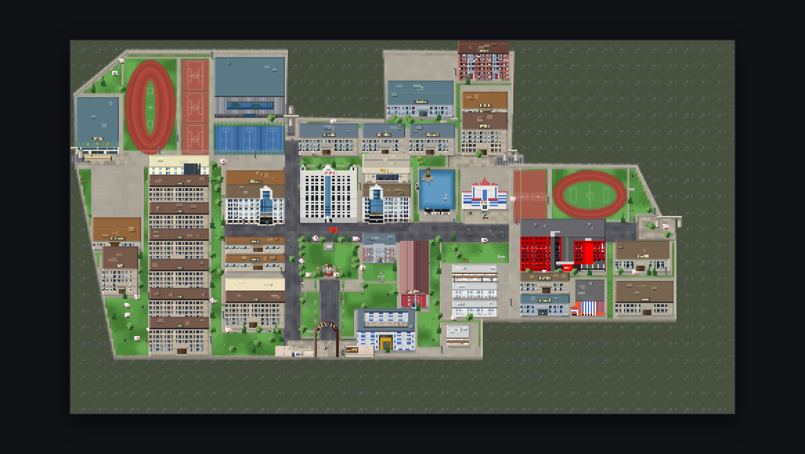
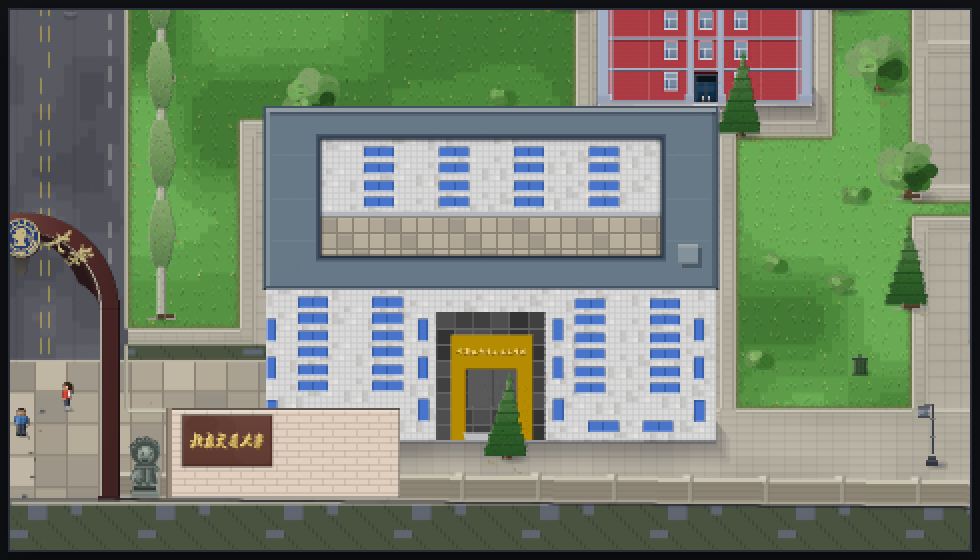
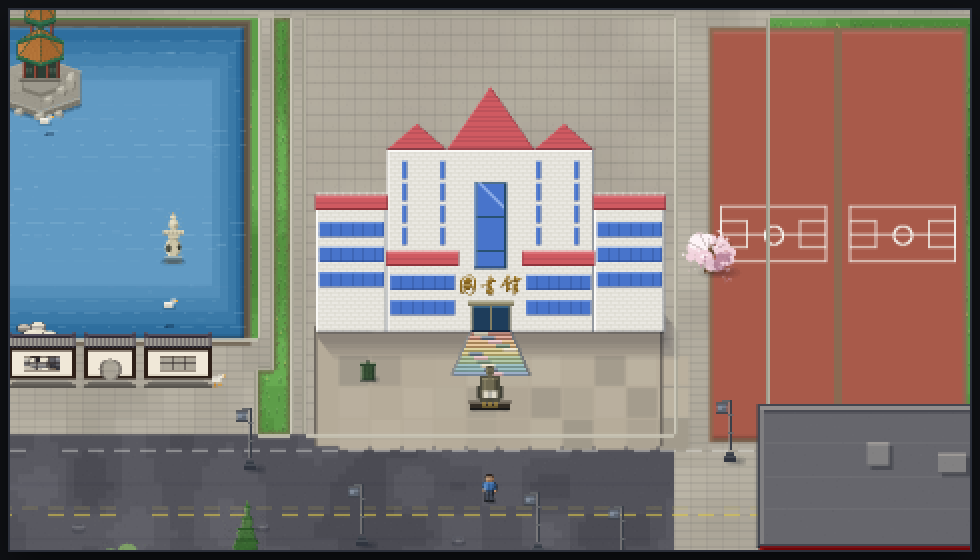
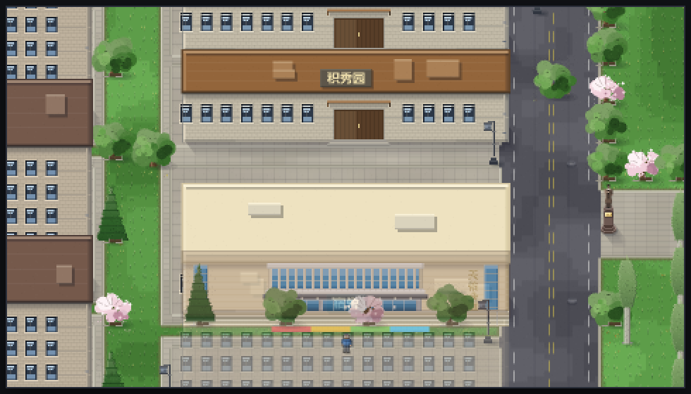
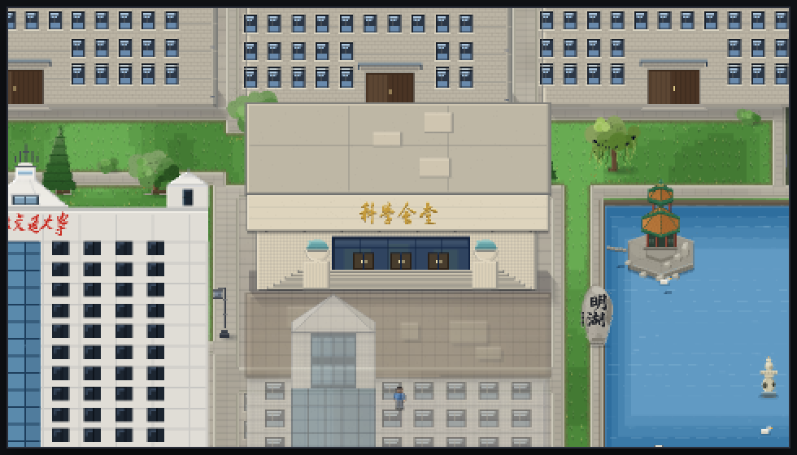
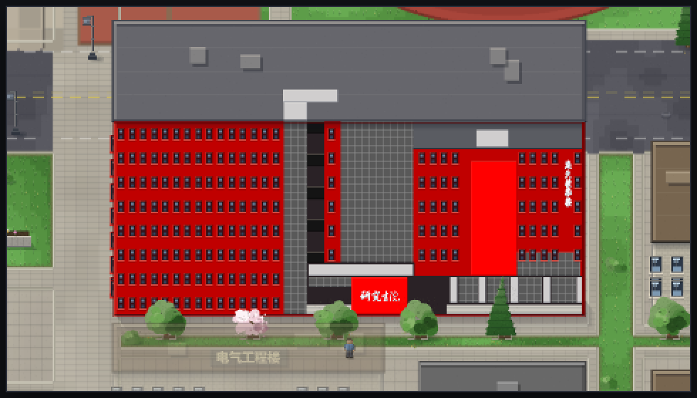
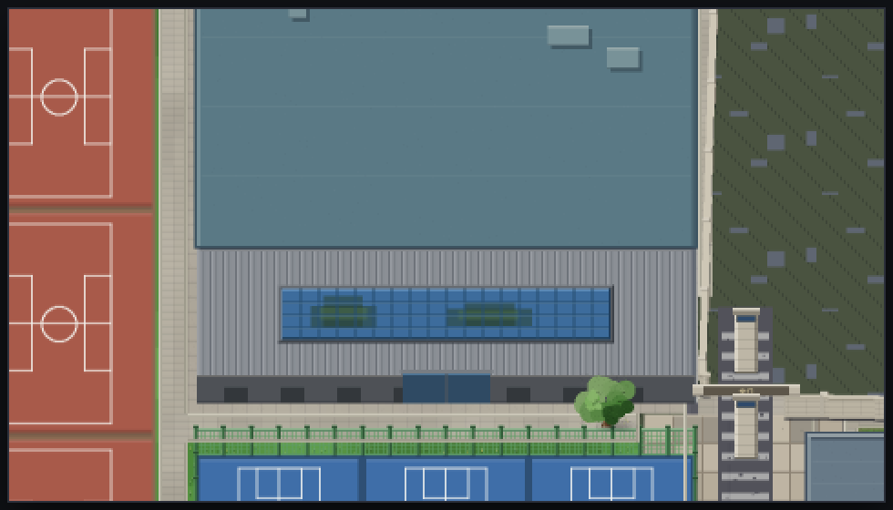
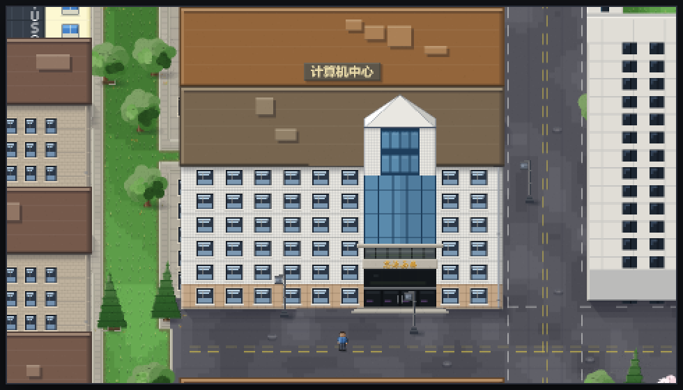
方向键 / WASD 自由行走，鞋底踩着地面而不是飘着；碰到楼、树、围墙、湖统统走不过去。
从「一屏看完整座校园」到 3× 贴着看，滚轮或右下角滑条都行。按 0 看全图、按 1 回原尺寸。
人被楼挡住的时候，那栋楼自动淡下去，你能一直看见自己在哪。
南门口那位红马甲志愿者。按 E 跟她说话，说一句「带我去图书馆」，她真的会沿着路把你走过去。
计算机中心和逸夫楼有室内场景：进教室坐下，桌上的电脑能直接打开刷题平台。
整个校园就是一个 .html，双击即开，不联网也能跑。楼、树、人、路面全是代码当场画的。
下面两段是自动录的演示动画；想自己走，点上面的按钮。
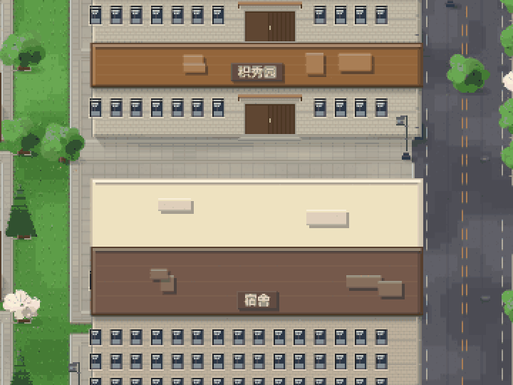
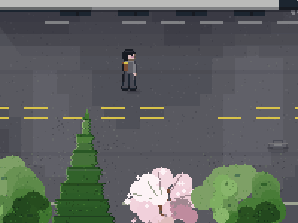
| 动作 | 键盘 |
|---|---|
| 左右移动 | ← → 或 A D |
| 前后移动 | ↑ ↓ 或 W S |
| 缩放 | 滚轮 / + − / 右下角滑条 |
| 看全图 / 回原尺寸 | 0 / 1 |
| 和向导说话 | 走到小北旁边按 E |
| 走进楼里 | 走到门口按 F |
| 室内 · 跟人说话 / 出门 | C / B |
本仓库不止这一张地图，另外几个分支各有各的模块：
| 分支 | 是什么 |
|---|---|
main | 像素校园全校地图（就是本页这个） |
wr | 算法刷题平台：题库、判题机、后端 8081 |
hjy | 保安老丁：出入管理的服务模块 |
xueba-jie | 学霸：能查教材、能一步步讲题的课程助手 |
把这个仓库拖到本地，双击 像素校园_全校地图.html 就能玩 —— 不需要装任何东西。
想看清楚点，用本地服务器打开更稳（浏览器对 file:// 有些限制）：
python -m http.server 8000 然后访问 http://localhost:8000
⚠️ 向导「小北」的自然语言理解要调用大模型，需要自备 API Key，存在浏览器本地、不会上传到仓库。 不填也能正常逛，只是她听不懂话。